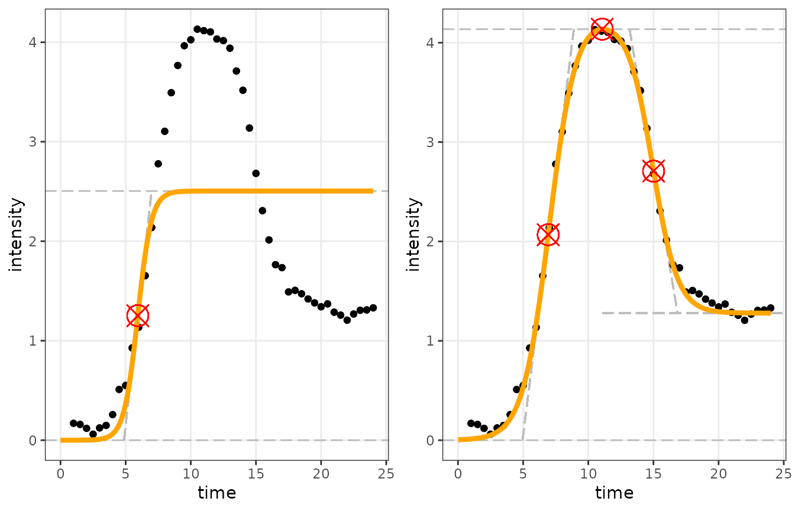

Identifying the best-fitting model category
Umut Caglar, Claus O. Wilke
2025-08-07
Source:vignettes/categorizing_fits.Rmd
categorizing_fits.RmdIn high-throughput scenarios, we often don’t know a priori whether a
given dataset represents a sigmoidal curve, a double-sigmoidal curve, or
neither. In these cases, we need to fit multiple different models to the
data and then determine which model best fits the data. This process is
normally done automatically by the function
sicegar::fitAndCategorize(). The default function assumes
that the lower asymptote (when x is at negative infinity) is zero, but
the argument use_h0 = TRUE can be used to estimate the
lower asymptote. In the vignette, we describe how this process works and
how the steps can be performed manually.
We will demonstrate this process for an artificial dataset representing a double-sigmoidal function. We first generate the data:
time <- seq(1, 24, 0.5)
noise_parameter <- 0.2
intensity_noise <- runif(n = length(time), min = 0, max = 1) * noise_parameter
intensity <- doublesigmoidalFitFormula(time,
finalAsymptoteIntensityRatio = .3,
maximum = 4,
slope1Param = 1,
midPoint1Param = 7,
slope2Param = 1,
midPointDistanceParam = 8)
intensity <- intensity + intensity_noise
dataInput <- data.frame(time, intensity)We need to fit the sigmoidal and double-sigmoidal models to this
dataset, using multipleFitFunction(). This requires first
normalizing the data:
normalizedInput <- normalizeData(dataInput = dataInput,
dataInputName = "doubleSigmoidalSample")
# Fit sigmoidal model
sigmoidalModel <- multipleFitFunction(dataInput = normalizedInput,
model = "sigmoidal",
n_runs_min = 20,
n_runs_max = 500,
showDetails = FALSE)
# Fit double-sigmoidal model
doubleSigmoidalModel <- multipleFitFunction(dataInput = normalizedInput,
model = "doublesigmoidal",
n_runs_min = 20,
n_runs_max = 500,
showDetails = FALSE)We also need to perform the additional parameter calculations, as
these are required by the categorize() function we use
below.
# Calculate additional parameters
sigmoidalModel <- parameterCalculation(sigmoidalModel)
# Calculate additional parameters
doubleSigmoidalModel <- parameterCalculation(doubleSigmoidalModel)This is what the two fits look like:

Clearly the sigmoidal fit is not appropriate but the double-sigmoidal
one is. Next we demonstrate how to arrive at this conclusion
computationally, using the function categorize(). It takes
as input the two fitted models as well as a number of parameters that
are used in the decision process (explained below under “The decision
process”).
# now we can categorize the fits
decisionProcess <- categorize(threshold_minimum_for_intensity_maximum = 0.3,
threshold_intensity_range = 0.1,
threshold_t0_max_int = 0.05,
parameterVectorSigmoidal = sigmoidalModel,
parameterVectorDoubleSigmoidal = doubleSigmoidalModel)The object returned by categorize() contains extensive
information about the decision process, but the key component is the
decision variable. Here, it states that the data fits the
double-sigmoidal model:
print(decisionProcess$decision)## [1] "double_sigmoidal"(The possible values here are “no_signal”, “sigmoidal”, “double_sigmoidal”, and “ambiguous”.)
The decision process
The decision process consists of two parts. First, the
categorize() function checks whether all provided input
data are valid. The steps of this verification are as follows:
- Pre-test 0: Was the
categorize()function provided with sigmoidal and double_sigmoidal models as input? - Pre-test 1: Do the provided sigmoidal and double sigmoidal models come from the same source and have the same data name?
- Pre-test 2a: Was the provided sigmoidal model generated by
sicegar::sigmoidalFitFunctions? - Pre-test 2b: Was the provided double_sigmoidal model generated by
sicegar::doublesigmoidalFitFunctions? - Pre-test 3: Do both models have same scaling parameters obtained from the data normalization process?
- Pre-test 4a: Have the additional parameters for sigmoidal fit been
calculated by
sicegar::parameterCalculation()? - Pre-test 4b: Have the additional parameters for double-sigmoidal fit
been calculated by
sicegar::parameterCalculation()?
After these steps, the primary decision process begins. It takes a list of four possible outcomes (“no_signal”, “sigmoidal”, “double_sigmoidal”, “ambiguous”) and systematically removes options until only one remains.
First, the algorithm checks if the provided data includes a signal or not.
- Test 1a: The observed intensity maximum must be bigger than
threshold_minimum_for_intensity_maximum; otherwise, the data is labeled with"no_signal". - Test 1b: The intensity range, i.e., the absolute difference between
the biggest and smallest observed intensity, must be greater than
threshold_intensity_range; otherwise, the data is labeled with"no_signal". - Test 1c: If at this point the data is not labeled with
"no_signal", then the data can not be labeled with"no signal"anymore.
Next the algorithm checks if the sigmoidal and double sigmoidal models make sense.
- Test 2a: The provided sigmoidal fit must be a successful fit;
otherwise, the data cannot be labeled with
"sigmoidal". - Test 2b: The provided double-sigmoidal fit must be a successful fit;
otherwise, the data cannot labelled with
"double_sigmoidal". - Test 3a: The sigmoidal fit must have an AIC score smaller than
threshold_AIC; otherwise, the data can not be labeled with"sigmoidal". - Test 3b: The double-sigmoidal fit must have an AIC score smaller
than
threshold_AIC; otherwise, the data cannot be labeled with"double_sigmoidal". - Test 4a: The value
startPoint_xfor the sigmoidal model must be a positive number; otherwise, the data cannot be labeled with"sigmoidal". - Test 4b: The value
startPoint_xfor the double-sigmoidal model must be a positive number; otherwise, the data cannot be labeled with"double_sigmoidal". - Test 5a: The value
start_intensityfor the sigmoidal model must be smaller thanthreshold_t0_max_int; otherwise, the data cannot be labeled with"sigmoidal". - Test 5b: The value
start_intensityfor the double-sigmoidal model must be smaller thanthreshold_t0_max_int; otherwise, the data cannot be labeled with"double_sigmoidal". - Test 6: For the double-sigmoidal model, the ratio of /the
model’s intensity prediction at the last observation time/ to
/the model’s maximum intensity prediction/ must be smaller than
threshold_dsm_tmax_IntensityRatio; otherwise, the data cannot be labeled with"double_sigmoidal". - Test 7: For the sigmoidal model; the ratio of /the model’s
intensity prediction at the last observation time/ to /the
model’s maximum intensity prediction/ must be larger than
threshold_sm_tmax_IntensityRatio; otherwise, the data cannot be labeled with"sigmoidal".
In step eight, the algorithm checks whether the data should be
labelled as "ambiguous" or not.
- Test 8: If at this point we still have at least one of the two
options
"sigmoidal"or"double_sigmoidal", then the data cannot be labeled with"ambiguous".
In the last step; the algorithm checks whether the data should be
labeled as "sigmoidal" or
"double_sigmoidal".
- Test 9: If at this point we still have both the
"sigmoidal"and"double_sigmoidal"options, then the choice will be made based on the AIC scores of those models and value ofthreshold_bonus_sigmoidal_AIC. IfsigmoidalAIC + threshold_bonus_sigmoidal_AIC < doublesigmoidalAIC, then the data cannot be labeled with"double_sigmoidal". IfsigmoidalAIC + threshold_bonus_sigmoidal_AIC > doublesigmoidalAIC, then the data cannot be labeled with"sigmoidal".
The only option that is left at this point will be the label of the data and thus the final decision.